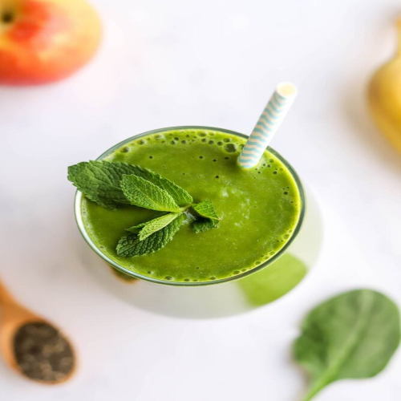

Back to Home

Smoothies
Green smoothies are a refreshing and nutrient-packed beverage that combines the goodness of leafy greens with the natural sweetness of fruits. Perfect as a quick breakfast or a mid-day energy boost, these smoothies are rich in vitamins, minerals, and antioxidants. Whether made with spinach, kale, or your favorite greens, they offer a delicious way to nourish your body and stay hydrated.
Prep Time: 5 min
Cook Time: None
Total Time: 5 min
0 Likes
Ingredients
- 1 cup spinach or kale
- 1/2 banana
- 1/2 cup pineapple or mango chunks
- 1 cup almond milk or water
- Ice cubes (optional)
Preparation
- Blend all ingredients until smooth.
- Serve immediately for a healthy boost of energy.